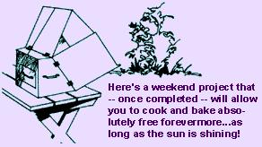
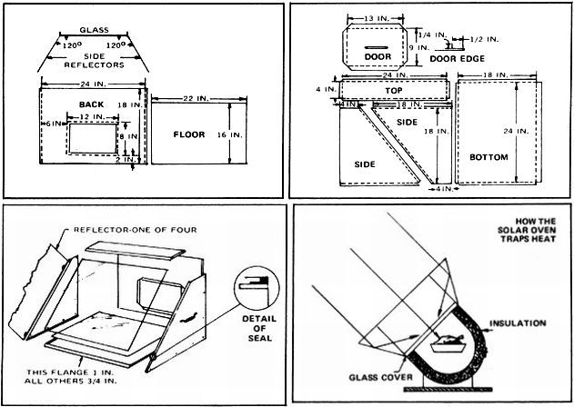
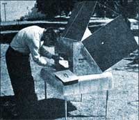
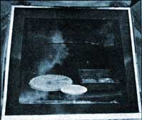

©1959 by D.S. Halacy, Jr., and originally published by the Macmillan Company as a chapter of the book, Fun With the Sun. Reprinted by permission of the author.
The "greenhouse" effect is well known to those who grow plants in such structures and also to those of us who have left the windows of an automobile rolled up on a warm, sunshiny day. The rays of the sun go through the glass well enough, but the reflections of longer wavelength are unable to bounce back out of the car. The result is aptly described as resembling an oven. And that is just what we're going to build ... a solar oven that will do a real job of cooking on a clear day, even in winter.
One aim of solar scientists is to provide a means of cooking for those countries in which fuel is scarce or expensive. Dr. Maria Telkes-a well-known experimenter in the field-has designed such an oven, which she feels might be massproduced at a reasonable price. Our design is copied from the Telkes unit, which has been demonstrated in foreign lands.
Basically the solar oven consists of a box for the food and a glass cover to admit and trap heat inside the container. The box shown is made from galvanized iron but could as well have been aluminum for lighter weight. The reflector panels are of aluminum.
Besides the sheet metal parts, we need a piece of double-strength window glass, a sealing strip for the pane and three handles. We will insulate the box with spun glass material two inches thick for greater heat retention.
MATERIALS
28-gauge galvanized iron (16 square feet)
No. 6, 3/8-inch sheet metal screws (approximately 24)
2-inch fiberglass insulation (12 square feet)
Double-strength window glass (22 by 24 inches)
Drawer pulls (three)
Flat black paint (one spray can)
2-inch roofing nails (six)
Sealer strip (eight feet)
Aluminum sheet .025 by 22 by 24 inches (four pieces)
Small turn-buttons with installation hardware (four)
It will be a good idea to have all materials on hand before beginning the project. One exception could be the sheet metal for the box, in case you decide to let your local sheet metal shop do the cutting and bending for you. This is a good idea unless you're familiar with metalwork, and will result in a more professional job at little additional cost.
If you want to do all the work yourself, and feel that you can handle the job, this is the way to begin: The bottom of the oven is a rectangle of metal, with the corners notched out to allow bending up flanges all around the sides. These are 3/4-inch flanges and they're bent up 90 degrees ... except for the front edge, which is a closed (acute) 45-degree angle, one inch long, as shown in the drawing.
The right and left side panels may be cut from one rectangle of metal to save material. Lay them out carefully to prevent waste. Again, 3/4-inch, 90-degree flanges are bent onto the front and top edges of each panel. The back and bottom edges are left flat. Be sure to make the two sets of bends opposite each other so that you'll have a right-hand panel and a left-hand panel, and not two of a kind!
The oven back has 3/4-inch flanges on each side and an opening cut in it for the door. Notch the corners of the opening at 45-degree angles and bend the 1/2-inch stiffener flanges inward. This will strengthen the door opening and also give the back a finished appearance.
Now make the top of the box. This is a channel with one 90-degree flange (to fit the back) and one open-or obtuse-45-degree flange (to match the slope of the glass). Next comes two 3/4-by-one-inch retaining angles, each 18 inches long (to hold the pane of glass). The box is now complete except for a door.
The door is the only difficult part to make and care must be taken to bend it correctly. The double, or "hemmed", edge strengthens the panel, and the flange which is left standing will fit into the opening in the back of the box. A snug fit here will make for a neat, effective door that seals properly and helps keep the heat inside where we want it.
A false bottom is needed to prevent the collapse of the insulation in the floor of the oven. This bottom is a rectangle of metal cut to the size shown in the drawing. Make sure it is not so large that it contacts the front, sides or back of the box. This would cause heat loss by conduction to those parts.
It might be well to mention here that an alternate method of construction can be used, that employs a little ingenuity and the "do it yourself" aluminum sheets and angles available at the hardware store. This approach uses flat sheets, with angles attached to them, instead of flanges bent from the sheets themselves. Of course, the 45-degree angles would have to be eliminated, and a slightly different sealing technique used for the glass, but some builders may prefer giving the idea a try.
Now, with the metal parts formed either in the sheet metal shop or at your own workbench, you're ready to begin assembly of the oven.The simplest way to put the unit together is with 3/8-inch, No. 6 sheet metal screws. They're available at the sheet metal shop, or your hardware store. If you're using aluminum, substitute hardened aluminum screws, since different metals coming in contact with each other may cause a corrosive action.
Mark pencil guidelines 3/8 inch from the bottom edge of the side panels, spaced as shown on the drawing. Center-punch the holes and drill with a No. 40 drill. A hand drill is fine; an electric drill is even better for this purpose.
Now, place the bottom of the oven on a flat surface, and hold the properly positioned side panel against it.Drill through the holes in the side panel and on into the flange of the bottom. It's a good idea to put in a screw as each hole is drilled to insure perfect alignment and prevent shifting of the parts. Notice that the bottom flange overlaps the side but no holes are drilled at this point.
With both side panels attached to the bottom, the back of the box may now be put in place and holes drilled to hold it there. Continue to keep the parts carefully lined up and to insert screws as you progress. The oven is taking shape now, and lacks only its top. Before we put it on, however, we will install the glass in the front of the box.Needless to say, care must be taken during this operation so that the pane will not be broken. Don't cut your fingers on the edges!
Clean the glass carefully with water. Then glue the sealing strip around its edge with cement (Goodyear Pliobond works well), following the directions with the adhesive to insure a strong joint. If you were able to find a sealer that fits over the edge of the glass the job will be easy. If you're using the bulb type, additional care will result in a neat assembly.
When the sealing strip is attached and properly "set" the glass may be put in place in the oven. Slide it down through the top, which we have left open for this purpose. For this operation lay the oven on its front face, being sure to have a perfectly flat surface to work on.
We will now install the 18-inch angles that hold the glass in place. Carefully drill holes in the sides of the box as shown on the drawing, locating them so that they will match the angles when the pieces of metal are put in position. Slip the angles through the opening in the top and set them on the glass with the 1-inch leg flat against the side of the box.
Working from the top, or reaching through the opening in the back of the box, press one angle very lightly against the glass. Do not force the glass so that it flattens the sealing strip, because-in addition to its sealing function-this strip acts as a cushion to prevent breakage of the glass.While holding the angle, mark through the holes in the side to indicate the proper location for the holes in the angle. Remove the angle, drill it, then replace the bracket and anchor it with sheet metal screws. Repeat this process on the other side.
With the glass installed, the oven's top may be put on and holes (for screws) drilled through it and into the back and sides of the cooking unit. Notice that the top fits down over the back and side panels.
The oven is now complete except for the carrying handles on each side and a similar handle on the door. These are attached with screws.
Fit the door into the opening and mark the holes for the turn-buttons that hold the door tight. Drill 3/16-inch holes in the back panel, and install the turn-buttons with nuts, bolts and washers. The washers hold the buttons away from the metal so they will clear the hemmed edge of the door.
The spun glass insulation is now cut to proper shape with a sharp knife or linoleum cutter. Use a straightedge for accurate trimming. Plan carefully so as not to waste material. The bottom piece can be beveled 45 degrees at the front if care is taken. Paint the inside surfaces of the insulation with flat black enamel, using-if you like-a pressure can for convenience.
After the paint is dry, the insulation is glued into the box with Pliobond or its equivalent. To do this, remove and set aside the back of the box. Then, positioning the oven with the glass down, cement the top insulation in place first and allow the adhesive to dry. Next, tip the box right side up and cement the bottom insulation in place. Press five 2-inch roofing nails point-down into the insulation and lay the false bottom over them. This bottom piece is painted flat black too. The side insulation can now be cemented into place and the box is complete except for the back.
Cement insulation to the back panel, cut the small rectangle from the opening and place it on the inside of the door. The back may now be carefully put back and the screws inserted that hold it in place. Lay an oven thermometer inside, fasten the door in place, and you're ready for the reflector panels, which are hinged to the box as shown in the drawing.
In tests the box itself will reach an inner temperature of only about 250 degrees. This is because heat loss to the surrounding air prevents the temperature inside from climbing higher. If we could increase the amount of heat going into the box, however, the oven would get hotter. For this reason we add the aluminum reflector plates shown in the photograph. Use Alclad if it's available.
Rivet two hinges to each reflector and be sure to mount two reflectors on the ends and two on the sides. If the Alclad sheets have red lettering on one side, use the opposite surface for your reflectors. Attach the hinges to the box with sheet metal screws. Install the bottom reflector first, then the sides, and finally the top. Besides their primary purpose, the reflectors also protect the glass.
Open the side panels 30 degrees to the received rays of the sun to reflect their heat into the box. This angle will always suffice for the side reflectors if you face the oven directly toward the sun. The 45-degree tilt of the glass is a compromise angle that gives all-around performance. However, a little thought will tell you that for maximum performance the angle of the top and bottom reflectors will vary with the position of the sun in the sky.
The discussion sounds complicated, but in practice adjusting the oven is very simple. Set it out in the open, preferably on a wooden table, and face it toward the sun. Open all the reflectors and swing the top one up and down while you watch the inside of the oven. You'll be able to tell when you have it at the proper angle by the reflection of the sun's rays on the dull black insulation. Bend the end of a piece of galvanized wire to act as a stop, insert this wire into a hole in the top reflector, and wrap the free end around the loosened screw as shown in the photograph.
Swing the side reflectors into position, while you check the angle they make with the glass by means of a cardboard template. Using two wires, attach the movable side panels to the top reflector. Now swing the bottom reflector up while you, again, watch the inside of the oven. When it's properly positioned, fix two wires in place from the bottom reflector to the side reflectors, and your solar baker is ready.
The test oven shown in the illustrations reached a temperature of 350 degrees in 15 minutes. This was in Arizona in mid-January, with the air temperature in the low 60's. The first time it was used, the unit baked a loaf of bread in just over an hour ... and then cooked a three-pound roast in three and a half hours! A whole meal can be prepared in the solar oven. The menu is limited only by your imagination.
|
 |
 |
 |
|
 |
|
|